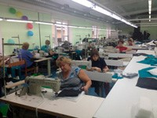
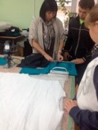

Экскурсия на предприятие "Чайковская спецодежда" 2017
13 октября группа операторов швейного оборудования 1-1618По под руководством классного руководителя Матушкиной Евгении Сергеевны побывала на экскурсии на предприятии ООО Чайковская спецодежда. Технолог швейного производства Бадрутдинова Люция Ренатовна подробно рассказала ребятам о всех проводимых швейных операциях на их предприятии. Познакомила с оборудованием и показала как швейные бригады создают готовые изделия. Мы увидели раскройные столы, куда с плотера распечатанные лекала на бумаге кладут на настилы от 20 до 50 слоев и начинается раскрой. Дальше нас провели в швейный цех, где за машинами сидят швеи и каждая выполняет свою операцию. После этого продукция поступает на участок ВТО, заканчивается процесс в ОТК. Ребята не только слушали технолога, но и наблюдали за работой специалистов, узнали, что труд швеи не легок, он требует большой усидчивости, внимательности и аккуратности в работе. Экскурсия по производству заинтересовала ее участников, особенно понравилась стачивающая машина с обрезным ножом, автомат для прорезных карманов, аппарат для нарезки липы, шнура, тесьмы и прочие спец машины. Нам подарили образцы шевронов и специальную шелковую нить, которой производят вышивку на вышивальных машинах. Полученные знания обучающиеся будут закреплять на уроках учебной практики.

